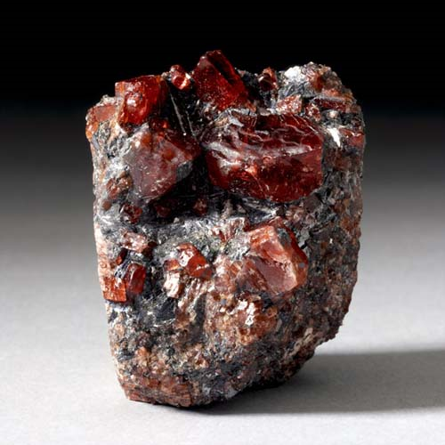

Rhodonite - Mn2+SiO3
Single-Chain Inosilicates


Habit: Pink to rose red. Rounded crystals, masses or grains, often coated or veined black with manganese oxides. Vitreous, somewhat pearly on cleavages; transparent to translucent. White streak.
Environment: Found in manganese deposits formed by sedimentary or hydrothermal contact or regional metamorphic processes.
Etymology: From the Greek rhodon, meaning "rose," because of its characteristic pink color.
Rhodonite is primarily opaque and sometimes streaked with black veins of manganese oxide. The bright pink-to-red color of this mineral can be quite attractive when it is cut cabochon-style for jewelry, and it is also used as a carving material. Very rarely transparent rhodonite is found, and it can be faceted into a gemstone